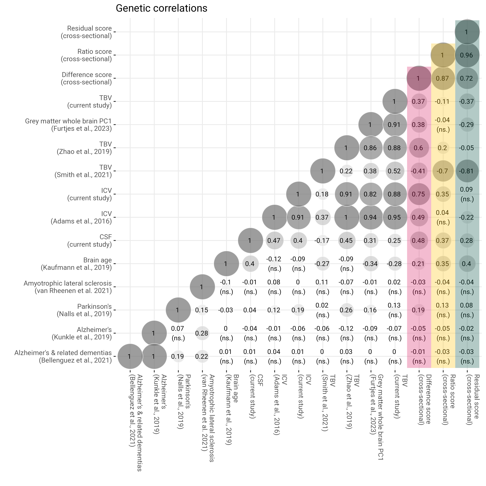
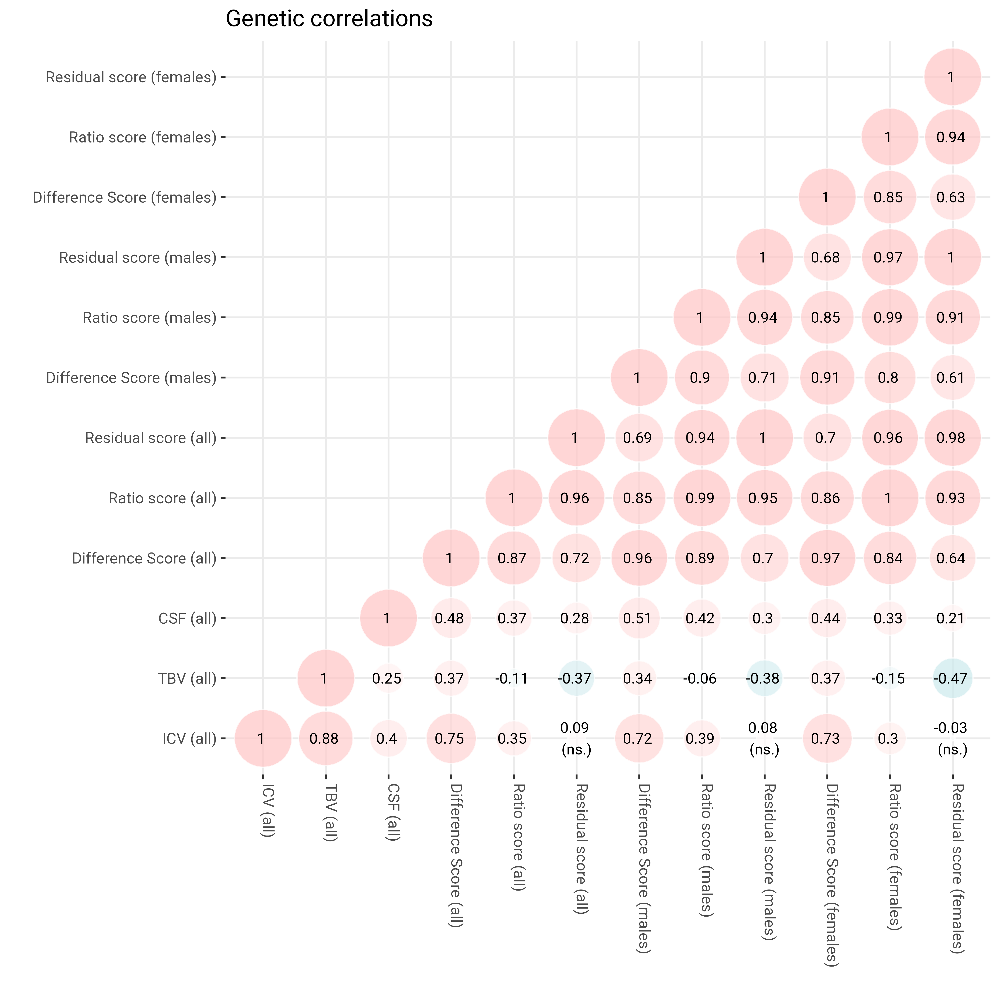

library(devtools)# install_github("GenomicSEM/GenomicSEM")library(GenomicSEM)library(stringr)library(data.table)########################################################################## MUNGE#######################################################################files <-list.files(pattern ="GWAS_brainAtrophy_")#files <- files[grepl("males", files)]hm3 <-"/eur_w_ld_chr/w_hm3.snplist"maf.filter =0.01info.filter =0.9# cycle through each of the filesfor(i in files){# read in file first file <-fread(i)# if it's residual or ratio score, we flip the effect sizes because that was also done throughout the rest of manuscript to harmonise the scores (higher score, more atrophy)if(grepl("ratio|resid", i)){ file$BETA <- file$BETA * (-1) }# write temporarily because munge can't read in gz filesfwrite(file, paste0("temp",i,".txt"), na ="NA", quote = F, sep ="\t", row.names =FALSE, col.names =TRUE)# isolate trait name trait.name =str_remove(i, "GWAS_brainAtrophy_") trait.name =str_remove(trait.name, "_N43110.gz")# munge this filemunge(files =paste0("temp",i,".txt"), trait.names = trait.name,hm3 = hm3, maf.filter = maf.filter, info.filter = info.filter,log.name =paste0(trait.name),column.names =list(SNP ="ID", A1 ="ALLELE1",A2 ="ALLELE0", effect ="BETA", P ="P", N ="N"))# remove temp file againfile.remove(paste0("temp",i,".txt"))}################################################################ Munging difficult sumstats############################################################library(devtools)library(GenomicSEM)library(stringr)library(data.table)library(tidyr)setwd("/CCACE_Shared/Anna_F/BrainAtrophy/data/GWASsumstats")hm3 <-"/CCACE_Shared/Anna_F/BrainAtrophy/eur_w_ld_chr/w_hm3.snplist"maf.filter =0.01info.filter =0.9i=list.files(pattern ="CHARGE")file <-fread(i, fill=TRUE)# separate fused columnfile <-separate(file, col ="N RSNUMBERS", into =c("N","RSNUMBER"), sep =" ")# some rows are empty and the entry has shifted to to column V13file$RSNUMBER <-ifelse(is.na(file$RSNUMBER), file$V13, file$RSNUMBER)# problem with p-value column - renamenames(file)[grep("P-", names(file))] <-"P"# write temporarily because munge can't read in gz filesfwrite(file, paste0("temp",i,".txt"), na ="NA", quote = F, sep ="\t", row.names =FALSE, col.names =TRUE)# isolate trait nametrait.name ="ICV_Adams.et.al"# munge this filemunge(files =paste0("temp",i,".txt"), trait.names = trait.name,hm3 = hm3, maf.filter = maf.filter, info.filter = info.filter,log.name =paste0(trait.name),column.names =list(SNP ="RSNUMBER", A1 ="Allele1",A2 ="Allele2", Z ="Zscore", P ="P", N ="Weight"))# remove temp file againfile.remove(paste0("temp",i,".txt"))
Genetic correlations
Code
########################################################################## LDSC#######################################################################library(devtools)library(GenomicSEM)library(stringr)# vector of munged sumstatstraits <-list.files(pattern =".sumstats.gz")# remove log filestraits <- traits[!grepl(".log", traits)]# remove BrainChange GWAS because they produce negative h2 estimatetraits = traits[!grepl("BrainChange", traits)]# remove male and female specific sumstatstraits = traits[!grepl("males", traits)]# remove SNP-by-age analysestraits = traits[!grepl("SNPxage", traits)]# trait.namestrait.names <-str_remove(traits, pattern =".sumstats.gz")# folder with ld scoresld ="eur_w_ld_chr/"# folder with ld weightswld ="eur_w_ld_chr/"# run ldscLDSCoutput <-ldsc(traits = traits, ld = ld, wld = wld, sample.prev =rep(NA, length(traits)),population.prev =rep(NA, length(traits)),trait.names = trait.names,stand = T)# dimnamesdimnames(LDSCoutput$S)[[1]] <-dimnames(LDSCoutput$S)[[2]]dimnames(LDSCoutput$S_Stand)[[1]] <-dimnames(LDSCoutput$S)[[2]]dimnames(LDSCoutput$S_Stand)[[2]] <-dimnames(LDSCoutput$S)[[2]]dimnames(LDSCoutput$I)[[1]] <-dimnames(LDSCoutput$S)[[2]]dimnames(LDSCoutput$I)[[2]] <-dimnames(LDSCoutput$S)[[2]]save(LDSCoutput, file ="LDSCoutput_neurodegenrative.RData")#save(LDSCoutput, file = "LDSCoutput_sexsplit.RData")############################################################################### Calculate associated matrix of Z statistics for this rG matrix###########################################################################library(gdata)S_LD<-LDSCoutput$S#pull V: the sampling covariance matrixV_LD<-LDSCoutput$V#standardize S [equivalent of cov2cor]D=sqrt(diag(diag(S_LD)))S_Stand=solve(D)%*%S_LD%*%solve(D)rownames(S_Stand)<-rownames(S_LD)colnames(S_Stand)<-colnames(S_Stand)#obtain diagonals of the original V matrix and take their sqrt to get SE'sDvcov<-sqrt(diag(V_LD))#calculate the ratio of the rescaled and original S matricesscaleO=as.vector(lowerTriangle((S_Stand/S_LD),diag=T))## Make sure that if ratio in NaN (devision by zero) we put the zero back inscaleO[is.nan(scaleO)] <-0#rescale the SEs by the same multiples that the S matrix was rescaled byDvcovl<-as.vector(Dvcov*t(scaleO))#obtain the sampling correlation matrix by standardizing the original V matrixVcor<-cov2cor(V_LD)#rescale the sampling correlation matrix by the appropriate diagonalsV_stand<-diag(Dvcovl)%*%Vcor%*%diag(Dvcovl)#calculate SEs of rgk<-nrow(LDSCoutput$S)SE_stand<-matrix(0, k, k)SE_stand[lower.tri(SE_stand,diag=TRUE)] <-sqrt(diag(V_stand))#calculate Z of rg matrixZ_cor<-S_Stand/SE_stand
Plot results (full sample)
Code
############################################################################### Genetic correlation matrix############################################################################## INCLUDE NEURODEGENERATIVE DISEASESload("LDSCoutput_neurodegenrative.RData")# pull out correlation matrixcormat <- LDSCoutput$S_Stand# re-rodercormat = cormat[c("ALZ", "ALZ_2019", "PD", "ALS", "ICV_Adams.et.al", "TBV_Zhao.et.al", "TBV_Smith.et.al", "PC1_whole_brain_greymatter", "brainage", "ICVstand", "TBVstand", "CSFstand", "diff_stand", "ratio_stand", "resid_stand"), c("ALZ", "ALZ_2019", "PD", "ALS", "ICV_Adams.et.al", "TBV_Zhao.et.al", "TBV_Smith.et.al", "PC1_whole_brain_greymatter", "brainage", "ICVstand", "TBVstand", "CSFstand", "diff_stand", "ratio_stand", "resid_stand")]# re-namedimnames(cormat)[[1]] <-c("Alzheimer's & related dementias\n(Bellenguez et al., 2021)", "Alzheimer's\n(Kunkle et al., 2019)", "Parkinson's\n(Nalls et al., 2019)", "Amyotrophic lateral sclerosis\n(van Rheenen et al. 2021)", "ICV\n(Adams et al., 2016)", "TBV\n(Zhao et al., 2018)", "TBV\n(Smith et al., 2021)", "Grey matter whole brain PC1\n(Furtjes et al., 2023)", "Brain age\n(Kaufmann et al., 2019)","ICV", "TBV", "CSF", "Difference score\n(cross)", "Ratio score\n(cross)", "Residual score\n(cross)")dimnames(cormat)[[2]] <-c("Alzheimer's & related dementias\n(Bellenguez et al., 2021)", "Alzheimer's\n(Kunkle et al., 2019)", "Parkinson's\n(Nalls et al., 2019)", "Amyotrophic lateral sclerosis\n(van Rheenen et al. 2021)", "ICV\n(Adams et al., 2016)", "TBV\n(Zhao et al., 2018)", "TBV\n(Smith et al., 2021)", "Grey matter whole brain PC1\n(Furtjes et al., 2023)", "Brain age\n(Kaufmann et al., 2019)","ICV", "TBV", "CSF", "Difference score\n(cross)", "Ratio score\n(cross)", "Residual score\n(cross)")# define function to obtain lower triangle get_lower_tri<-function(cormat){ cormat[upper.tri(cormat)] <-NAreturn(cormat) }# get correlation matrix for both samples together cor =get_lower_tri(cormat)# melt matrix melted = reshape2::melt(cor)# one value is > 1 which can happen sometimes melted$value[melted$value >1.01] <-1# get rounded value melted$value_round =round(melted$value, digit =2) melted$distance0 =abs(melted$value)# for some reason one corr over 1 doesn't get colored melted$value <-ifelse(melted$value >1, 1, melted$value)# pull out standard errors# SEs will be listed in the same order as they are listed in the genetic covariance matrix r<-nrow(LDSCoutput$S) SE_Stand<-matrix(0, r, r) SE_Stand[lower.tri(SE_Stand,diag=TRUE)] <-sqrt(diag(LDSCoutput$V_Stand))dimnames(SE_Stand)<-dimnames(LDSCoutput$S)# re-roder SE_Stand = SE_Stand[c("ALZ","ALZ_2019","PD","ALS","ICV_Adams.et.al","TBV_Zhao.et.al", "TBV_Smith.et.al", "PC1_whole_brain_greymatter","brainage", "ICVstand", "TBVstand", "CSFstand", "diff_stand", "ratio_stand", "resid_stand"), c("ALZ","ALZ_2019","PD","ALS","ICV_Adams.et.al", "TBV_Zhao.et.al", "TBV_Smith.et.al", "PC1_whole_brain_greymatter","brainage", "ICVstand", "TBVstand", "CSFstand", "diff_stand", "ratio_stand", "resid_stand")]# re-namedimnames(SE_Stand)[[1]] <-c("Alzheimer's & related dementias\n(Bellenguez et al., 2021)", "Alzheimer's\n(Kunkle et al., 2019)", "Parkinson's\n(Nalls et al., 2019)", "Amyotrophic lateral sclerosis\n(van Rheenen et al. 2021)", "ICV\n(Adams et al., 2016)", "TBV\n(Zhao et al., 2018)", "TBV\n(Smith et al., 2021)", "Grey matter whole brain PC1\n(Furtjes et al., 2023)", "Brain age\n(Kaufmann et al., 2019)","ICV", "TBV", "CSF", "Difference score\n(cross)", "Ratio score\n(cross)", "Residual score\n(cross)")dimnames(SE_Stand)[[2]] <-c("Alzheimer's & related dementias\n(Bellenguez et al., 2021)", "Alzheimer's\n(Kunkle et al., 2019)", "Parkinson's\n(Nalls et al., 2019)", "Amyotrophic lateral sclerosis\n(van Rheenen et al. 2021)", "ICV\n(Adams et al., 2016)", "TBV\n(Zhao et al., 2018)", "TBV\n(Smith et al., 2021)", "Grey matter whole brain PC1\n(Furtjes et al., 2023)", "Brain age\n(Kaufmann et al., 2019)","ICV", "TBV", "CSF", "Difference score\n(cross)", "Ratio score\n(cross)", "Residual score\n(cross)")#melt data SEmelted <- reshape2::melt(SE_Stand)names(SEmelted)[grepl("value", names(SEmelted))] <-"SE"# merge with corr data both =merge(melted, SEmelted, by =c("Var1", "Var2"), all.x = T)# work out confidence intervals both$ci_u <- both$value + (1.96*both$SE) both$ci_l <- both$value - (1.96*both$SE)# get sig assocs both$sig <-"" both$sig[which(both$ci_u >0& both$ci_l <0)] <-"\n(ns.)" both$sig[which(both$ci_u <0& both$ci_l >0)] <-"\n(ns.)" both$sig[is.na(both$value)] <-NA both$value_round <-paste0(both$value_round, " ", both$sig) both$value_round[is.na(both$value)] <-NA#both$value_round[grep("NA", both$value_round)] <- str_remove(both$value_round[grep("NA", both$value_round)], pattern = " NA")# plotlibrary(ggplot2) p =ggplot()+geom_point(data = both, aes(x = Var1, y = Var2, shape = value, fill = value, size = distance0), shape =21, alpha =0.7, colour ="white") +scale_fill_gradient2(low ="grey45", mid ="white", high ="grey45",limit =c(-1,1), space ="Lab" ,name="Correlation", guide ="legend")+scale_size_continuous(range =c(1, 15), guide ="none")+geom_text(data = both, aes(Var1, Var2, label = value_round), color ="black", size =3)+geom_rect(aes(xmax =stage("Residual score\n(cross)", after_scale(xmax+0.5)), xmin =stage("Residual score\n(cross)", after_scale(xmin-0.5)), ymax =stage("Residual score\n(cross)", after_scale(ymax+0.5)), ymin =stage("Alzheimer's & related dementias\n(Bellenguez et al., 2021)", after_scale(ymin-0.5))), fill ="#004D40", alpha =0.3)+geom_rect(aes(xmax =stage("Ratio score\n(cross)", after_scale(xmax+0.5)), xmin =stage("Ratio score\n(cross)", after_scale(xmin-0.5)), ymax =stage("Ratio score\n(cross)", after_scale(ymax+0.5)), ymin =stage("Alzheimer's & related dementias\n(Bellenguez et al., 2021)", after_scale(ymin-0.5))), fill ="#FFC107", alpha =0.3)+geom_rect(aes(xmax =stage("Difference score\n(cross)", after_scale(xmax+0.5)), xmin =stage("Difference score\n(cross)", after_scale(xmin-0.5)), ymax =stage("Difference score\n(cross)", after_scale(ymax+0.5)), ymin =stage("Alzheimer's & related dementias\n(Bellenguez et al., 2021)", after_scale(ymin-0.5))), fill ="#D81B60", alpha =0.3)+xlab("")+ylab("")+#scale_x_discrete(labels = axisNames)+#scale_y_discrete(labels = axisNames)+guides(fill ="none")+theme_bw()+theme(panel.border =element_blank(),axis.text.x =element_text(angle =270, vjust =0, hjust =0))+ggtitle("Genetic correlations")ggsave("genetic_corr_neurodeg.png", plot = p, width =22, height =22, units ="cm", dpi =600)

Plot sex-split correlations
Code
############################################################################### Genetic correlation matrix#### Sex split###########################################################################load("LDSCoutput_sexsplit.RData")# pull out correlation matrixcormat <- LDSCoutput$S_Stand# re-rodercormat = cormat[c("ICVstand","TBVstand","CSFstand","diff_stand", "ratio_stand", "resid_stand", "diff_stand_males", "ratio_stand_males","resid_stand_males","diff_stand_females", "ratio_stand_females", "resid_stand_females"), c("ICVstand","TBVstand","CSFstand","diff_stand", "ratio_stand", "resid_stand", "diff_stand_males", "ratio_stand_males","resid_stand_males","diff_stand_females", "ratio_stand_females", "resid_stand_females")]# re-namedimnames(cormat)[[1]] <-c("ICV (all)","TBV (all)","CSF (all)","Difference Score (all)", "Ratio score (all)", "Residual score (all)", "Difference Score (males)", "Ratio score (males)","Residual score (males)","Difference Score (females)", "Ratio score (females)", "Residual score (females)")dimnames(cormat)[[2]] <-c("ICV (all)","TBV (all)","CSF (all)","Difference Score (all)", "Ratio score (all)", "Residual score (all)", "Difference Score (males)", "Ratio score (males)","Residual score (males)","Difference Score (females)", "Ratio score (females)", "Residual score (females)")# define function to obtain lower triangle get_lower_tri<-function(cormat){ cormat[upper.tri(cormat)] <-NAreturn(cormat) }# get correlation matrix for both samples together cor =get_lower_tri(cormat)# melt matrix melted = reshape2::melt(cor)# one value is > 1 which can happen sometimes melted$value[melted$value >1.01] <-1# get rounded value melted$value_round =round(melted$value, digit =2) melted$distance0 =abs(melted$value)# for some reason one corr over 1 doesn't get colored melted$value <-ifelse(melted$value >1, 1, melted$value)# pull out standard errors# SEs will be listed in the same order as they are listed in the genetic covariance matrix r<-nrow(LDSCoutput$S) SE_Stand<-matrix(0, r, r) SE_Stand[lower.tri(SE_Stand,diag=TRUE)] <-sqrt(diag(LDSCoutput$V_Stand))dimnames(SE_Stand)<-dimnames(LDSCoutput$S)# re-roder SE_Stand = SE_Stand[c("ICVstand","TBVstand","CSFstand","diff_stand", "ratio_stand", "resid_stand", "diff_stand_males", "ratio_stand_males","resid_stand_males","diff_stand_females", "ratio_stand_females", "resid_stand_females") ,c("ICVstand","TBVstand","CSFstand","diff_stand", "ratio_stand", "resid_stand", "diff_stand_males", "ratio_stand_males","resid_stand_males","diff_stand_females", "ratio_stand_females", "resid_stand_females")]# re-namedimnames(SE_Stand)[[1]] <-c("ICV (all)","TBV (all)","CSF (all)","Difference Score (all)", "Ratio score (all)", "Residual score (all)", "Difference Score (males)", "Ratio score (males)","Residual score (males)","Difference Score (females)", "Ratio score (females)", "Residual score (females)")dimnames(SE_Stand)[[2]] <-c("ICV (all)","TBV (all)","CSF (all)","Difference Score (all)", "Ratio score (all)", "Residual score (all)", "Difference Score (males)", "Ratio score (males)","Residual score (males)","Difference Score (females)", "Ratio score (females)", "Residual score (females)")#melt data SEmelted <- reshape2::melt(SE_Stand)names(SEmelted)[grepl("value", names(SEmelted))] <-"SE"# merge with corr data both =merge(melted, SEmelted, by =c("Var1", "Var2"), all.x = T)# work out confidence intervals both$ci_u <- both$value + (1.96*both$SE) both$ci_l <- both$value - (1.96*both$SE)# get sig assocs both$sig <-"" both$sig[which(both$ci_u >0& both$ci_l <0)] <-"\n(ns.)" both$sig[which(both$ci_u <0& both$ci_l >0)] <-"\n(ns.)" both$sig[is.na(both$value)] <-NA both$value_round <-paste0(both$value_round, " ", both$sig) both$value_round[is.na(both$value)] <-NA#both$value_round[grep("NA", both$value_round)] <- str_remove(both$value_round[grep("NA", both$value_round)], pattern = " NA")# plotlibrary(ggplot2) p =ggplot()+geom_point(data = both, aes(x = Var1, y = Var2, shape = value, fill = value, size = distance0), shape =21, alpha =0.7, colour ="white") +scale_fill_gradient2(low ="#91D2D9", mid ="white", high ="#FFC4C4",limit =c(-1,1), space ="Lab" ,name="Correlation", guide ="legend")+scale_size_continuous(range =c(1, 15), guide ="none")+geom_text(data = both, aes(Var1, Var2, label = value_round), color ="black", size =3)+xlab("")+ylab("")+#scale_x_discrete(labels = axisNames)+#scale_y_discrete(labels = axisNames)+guides(fill ="none")+theme_bw()+theme(panel.border =element_blank(),axis.text.x =element_text(angle =270, vjust =0, hjust =0))+ggtitle("Genetic correlations")ggsave("genetic_corr_sexsplit.png", plot = p, width =20, height =20, units ="cm", dpi =600)

GWAS-by-subtraction in GenomicSEM
Code
setwd(wd)library(devtools)library(GenomicSEM)#### Step 2traits <-c("TBVstand.sumstats.gz","ICVstand.sumstats.gz","resid_stand.sumstats.gz")sample.prev <-rep(NA, length(traits))population.prev <-rep(NA, length(traits))ld<-"eur_w_ld_chr/"wld <-"eur_w_ld_chr/"trait.names<-c("TBV", "ICV", "resid")LDSCoutput <-ldsc(traits = traits, sample.prev = sample.prev, population.prev = population.prev, ld=ld, wld=wld, trait.names=trait.names,stand = T)save(LDSCoutput, file="LDSCoutput_TBV_ICV.RData")###### Step 3load(file=paste0(wd, "/LDSCoutput_TBV_ICV.RData"))# BaseICV is captured by both diff atrophy score and ICV# Atrophy however should only be indicated by diff atrophy score and should be independent of ICVmodel<-' BaseICV=~NA*TBV + ICV Atrophy=~NA*TBV # make sure all variances and covariances are captured by the latent factors Atrophy ~~ 1*Atrophy BaseICV ~~ 1*BaseICV # forcing atrophy and BaseICV to be uncorrelated Atrophy~~0*BaseICV ICV ~~ 0*TBV ICV ~~ 0*ICV TBV ~~ 0*TBV # add in resid to how correlated it is with Atrophy Atrophy ~~ resid BaseICV ~~ resid'# this is a fully saturated model (which is why no fit statistics are printed)output<-usermodel(LDSCoutput,estimation="DWLS",model=model)## Step 4# files to preparefiles =c(paste0(GWASwd, "/GWAS_brainAtrophy_TBVstand_N43110.gz"), paste0(GWASwd, "/GWAS_brainAtrophy_ICVstand_N43110.gz"))file.exists(files)ref ="reference.1000G.maf.0.005.txt.gz"trait.names =c("TBV","ICV")# SEs are not on a logistic scalese.logit =c(F,F)info.filter =0.6maf.filter =0.01#betas = c("BETA","BETA")sumstats <-sumstats(files = files, ref = ref, trait.names = trait.names, se.logit = se.logit, info.filter = info.filter, maf.filter = maf.filter, #betas = betas,OLS=c(T,T),linprob=NULL,N=c(43110,43110), parallel = F)save(sumstats, file="Sumstats_TBV_ICV.RData")file.exists("Sumstats_TBV_ICV.RData")
SNP-level analysis
The script below makes it easier to parallelise SNP-level GWAS-by-subtraction analyses in GenomicSEM (make sure you change the model in the script when using this). Run this with: Rscript GWASbySubtractionPARALLEL.R --chr 3 --RData Sumstats_TBV_ICV.RData --LDSCout LDSCoutput_TBV_ICV.RData --outPath GWASbySubtraction
Code
#!/usr/bin/Rscript# Run the 5th step of GWAS-by-subtraction to parallelise each chromosome if (!require("optparse")) install.packages("optparse", repos="https://cran.rstudio.com/")suppressMessages(library("optparse"))# SET OPTIONSoption_list =list(make_option("--chr", action ="store", default =NA, type ="character",help ="Chrosomome to be processed [required]"),make_option("--trait1", action ="store", default =NA, type ="character",help ="Trait 1 [required]"),make_option("--trait2", action ="store", default =NA, type ="character",help ="Trait 2 [required]"),make_option("--RData", action ="store", default =NA, type ="character",help ="RData containing cleaned sumstats [required]"),make_option("--LDSCout", action ="store", default =NA, type ="character",help ="LDSC output [required]"),make_option("--outPath", action ="store", default =NA, type ="character",help ="Output file name [required]"))opt =parse_args(OptionParser(option_list=option_list))library(devtools)library(GenomicSEM)# FEEDBACK ON OPTIONSprint(Sys.time())print(paste0("GWAS-by-subtraction CHR = ", opt$chr))print(opt$RData)print(paste0(opt$outPath,"/Atrophy_GWASbySubtraction", opt$chr,".RData"))## Step 5# load LDSC outputload(file=opt$LDSCout)# load in RData file with cleaned SNP datafile = opt$RDataload(file)# keep only one chromosomesumstats = sumstats[which(sumstats$CHR == opt$chr),]print(table(sumstats$CHR))# SNP modelmodelSNP<-' BaseICV=~NA*TBV + start(0.8)*ICV Atrophy=~NA*TBV # make sure all variances and covariances are captured by the latent factors Atrophy ~~ 1*Atrophy BaseICV ~~ 1*BaseICV ICV ~~ 0*TBV ICV ~~ 0*ICV TBV ~~ 0*TBV # forcing atrophy and BaseICV to be uncorrelated Atrophy~~0*BaseICV # add in SNP effect Atrophy ~ SNP BaseICV ~ SNP SNP ~~ SNP'#Run the Genomic SEM GWASoutputGWAS<-userGWAS(covstruc=LDSCoutput,SNPs=sumstats,estimation="ML",sub =c("Atrophy ~ SNP"),Q_SNP = T,smooth_check = T, parallel = T,GC ="standard",MPI = F,fix_measurement = T,model=modelSNP,cores =5,toler = F, SNPSE = F) # printwarn = FALSEsave(outputGWAS, file=paste0(opt$outPath,"/Atrophy_GWASbySubtraction_", opt$chr,".RData"))##### Run with # Rscript GWASbySubtractionPARALLEL.R --chr 3 --RData Sumstats_TBV_ICV.RData --LDSCout LDSCoutput_TBV_ICV.RData --outPath GWASbySubtraction